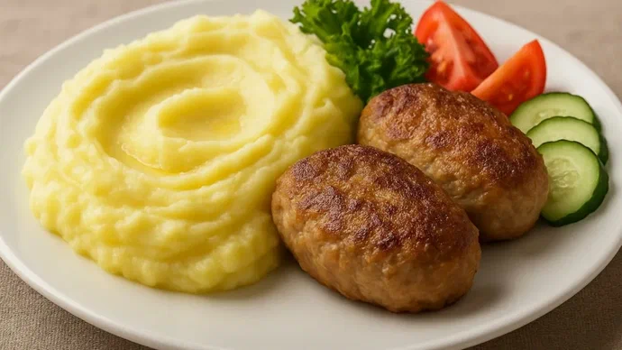

A classic not only of home cooking but also of the school cafeteria. No matter what grade was given or what was written in the diary, this lunch softened all hardships. To achieve that very school cafeteria taste, do not add milk. Adjust the thickness exclusively with potato broth or water.
Peel the onions and potatoes. Prepare a frying pan with a lid, a pot, and a potato masher.
Chop the onion and add it to the minced meat. Crack an egg into it, add salt and pepper. Mix well and leave for 5–7 minutes.
Cut the tubers into small pieces, place them in a pot, and cover with water. The liquid should completely cover the cut pieces. Cook the potatoes for 15–20 minutes after boiling. The pieces should become soft and easy to pierce.
Form small round cutlets from the minced meat. Place them in a frying pan heated with vegetable oil and fry over medium heat for 2–3 minutes on each side.
Cover the pan with a lid. Reduce the heat to low and fry, turning occasionally, for 15–20 minutes.
Save 1 cup of the potato water, and pour the rest out of the pot. Add butter to the potatoes and mash everything into a puree. If necessary, adjust the thickness with the saved water.